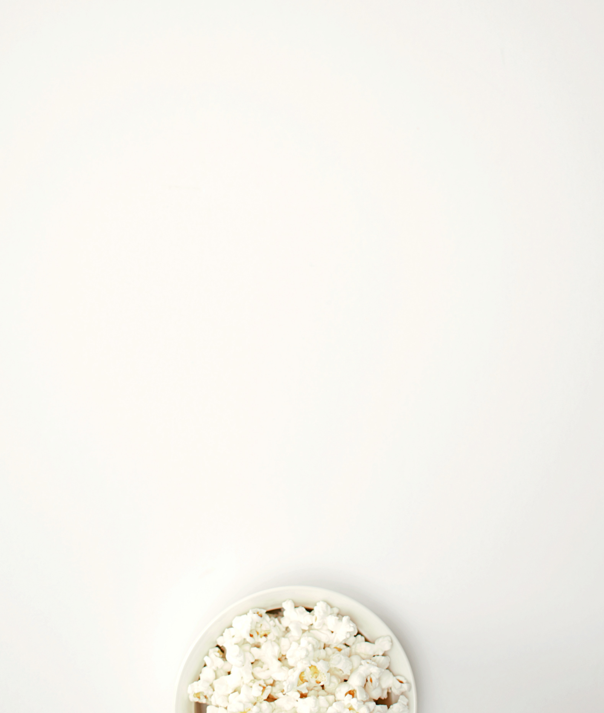

==========================================
민영이는 누룽지를 좋아한다.
'민영이는 할머니 입맛'이라는 말이 익숙해질 때,
누룽지를 즐겨 먹는다는 말에
또 한 번 낯설게 느꼈던 적이 있다.

이 친구가 궁금하다면 클릭해보시지.
==========================================
*b
- 굵게 강조
- 그냥 시각적으로만 강조
* strong
- 굵게 강조
- 웹접근성에 어필
- 음성으로 읽을 때도 강조
* u
- 밑줄 강조
* h1 ~ h6
- 글자의 크기
* 통계
1. head
2. body
3. html
4. title
5. meta
6. div
7. a
8. script
9. link
10. img
11. p
12. span
13. li
14. ui
15. br
16. style
17. h1
18. h2
19. input
20. form
21. strong
22. h3
23. table
24. tr
25. td
* 줄바꿈
- br은 그냥 줄바꿈
- p는 단락을 지정
* HTML안에서 부등호 쓰기
- < : <
- > : >
- & : &
* 부모, 자식 관계
- 부모와 자식 태그 사이에는 정해진 관계가 아니다.
- 즉 <a>태그 안에 <b>가 있을 수 있고 바뀔 수도 있다.
- 하지만, 그 관계가 정해진 태그도 있다.
- 그것은 바로 li태그는 ol과 ul의 자식관계로 구성
* 목차
- li로 목차 생성 가능
* title
- 탭의 이름을 설정
- 한글 사용 시 이상한 문자로 나올 수 있음
* meta
- <meta charset="utf-8"> = "웹페이지야 utf-8로 열어야 해~"
* head, body, html
- 본문과 본문을 설명하는 정보를 각기 다른 태그로 분리해서 정돈!
- head는 본문을 설명하는 태그
- body는 본문 태그
- 또, head와 body를 html 태그로 감싸기로 약속!
- 추가로 이 웹페이지가 HTML로 만들어졌다는 것을 표현하기 위해서 <doctype html>를 먼저 기입!
* a
- HyperText로 태그의 제왕
- anchor(닻)의 첫글자
- <a href="http://www...." target="..." title="...">쓰고싶은말</a>
- target에서 _blank를 했을 때는 링크 클릭했을 때 새창에서 페이지가 열리게 함
- title은 링크에 커서를 얹을 때 나오는 문구
* iframe
- 동영상을 삽입하는 태그
- frameborder : 테두리 표시 유무
- scrolling : 스크롤바 유무
- allowfullscreen : 전체화면 기능 유무
* iframe
- 동영상을 삽입하는 태그
- frameborder : 테두리 표시 유무
- scrolling : 스크롤바 유무
- allowfullscreen : 전체화면 기능 유무